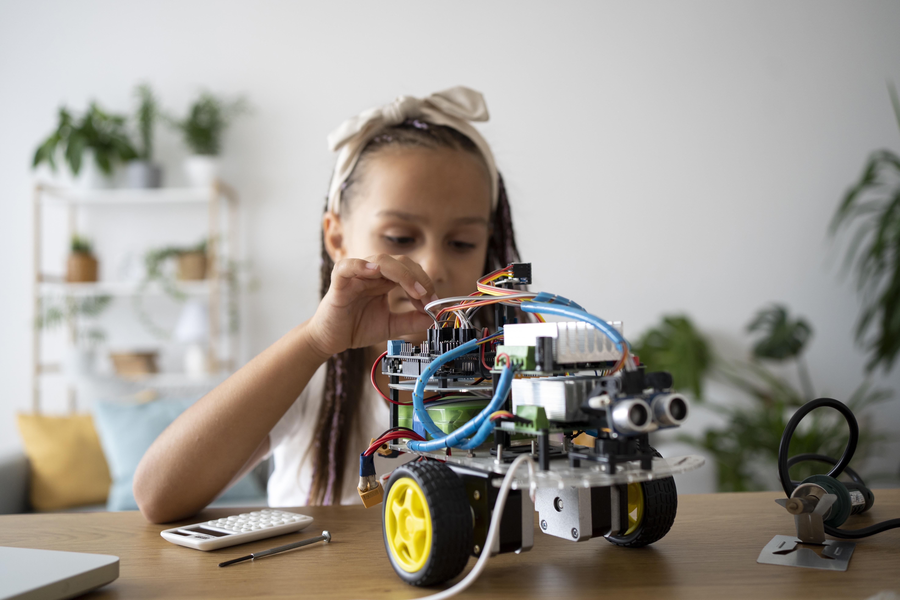
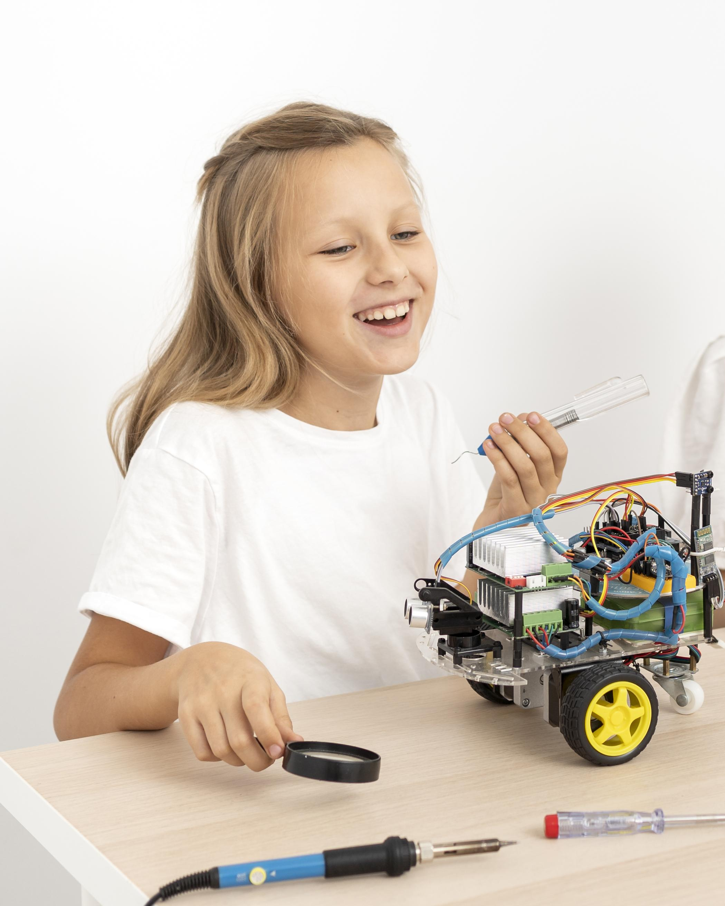

.png)
TECNOSER · ROBÓTICA
Robótica y pensamiento computacional
El laboratorio de robótica del Gimnasio El Hontanar, Robotic Labs, es un espacio donde los estudiantes imaginan, diseñan, construyen y ponen en funcionamiento sus propios proyectos. Este entorno integra conocimiento, tecnología y valores para formar estudiantes capaces de resolver problemas reales con ingenio y determinación.
¿Cómo desarrollar pensamiento tecnológico durante el año escolar, sin depender solo de la teoría?
En mesas multipropósito organizadas para el trabajo colaborativo, los estudiantes diseñan, programan y construyen prototipos que responden a necesidades del entorno escolar. El proceso inicia con la planeación digital, que incluye diseño asistido por computador, y continúa con la fabricación mediante impresora 3D y cortadora láser, hasta lograr dispositivos funcionales que se prueban en el Maker Space, un salón creado para cumplir los objetivos del Bachillerato Internacional en el Hontanar.
Los proyectos parten de situaciones auténticas. Un ejemplo destacado en El Hontanar ha sido la automatización del riego del huerto escolar, donde los estudiantes desarrollaron sistemas que regulan el uso del agua. También diseñaron una motobomba tipo robot-tanque para recolectar agua en zonas verdes, idea propuesta y ejecutada por los propios estudiantes.

- HABILIDADES STEM INTEGRALES -
Fortalecemos habilidades STEM desde primaria,
sin procesos aislados entre áreas
Soluciones
automatizadas
En el laboratorio se crean soluciones que optimizan tareas repetitivas, incorporando sensores de movimiento y sonido para mejorar la eficiencia de procesos cotidianos.
Trabajo y
perseverancia
La robótica educativa fortalece habilidades técnicas, pero también fomenta el trabajo en equipo, la perseverancia y la responsabilidad. Cada máquina es el resultado de la colaboración y la mejora continua.
- LIDERAZGO Y LOGROS -
Semillero de robótica de alto nivel competitivo
El semillero de robótica del colegio participa en competencias intercolegiales y universitarias de alto nivel, donde ha obtenido primeros lugares y posiciones destacadas en torneos regionales e internacionales. Estas experiencias consolidan el liderazgo académico característico del Gimnasio El Hontanar como uno de los Colegios bilingües en Bogotá y de los colegios en Chía comprometidos con la excelencia.

Prototipos funcionales en nuestro Maker Space equipado y seguro
En Robotic Labs, cada prototipo demuestra que la tecnología puede estar al servicio del cuidado del entorno, la optimización de recursos y el bienestar colectivo. Aquí, aprender robótica no es solo programar: es imaginar, construir y comprobar que las ideas, cuando se trabajan con amor y propósito, pueden transformar la realidad.
Ven a conocer nuestro Maker Space: un laboratorio seguro y completamente dotado donde los estudiantes desarrollan competencias tecnológicas construyendo, experimentando y programando. Agenda tu visita y vive la experiencia de aprender creando en el Hontanar.


.png)
.jpg)